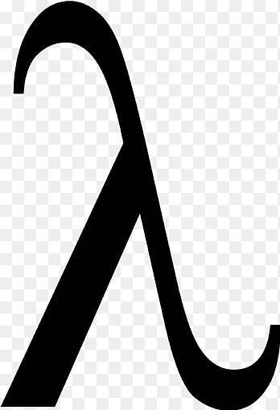
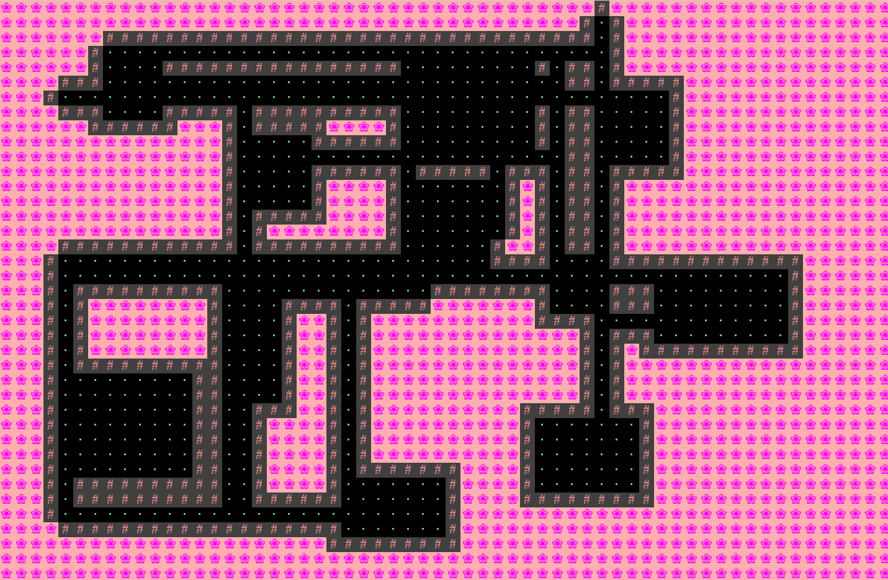
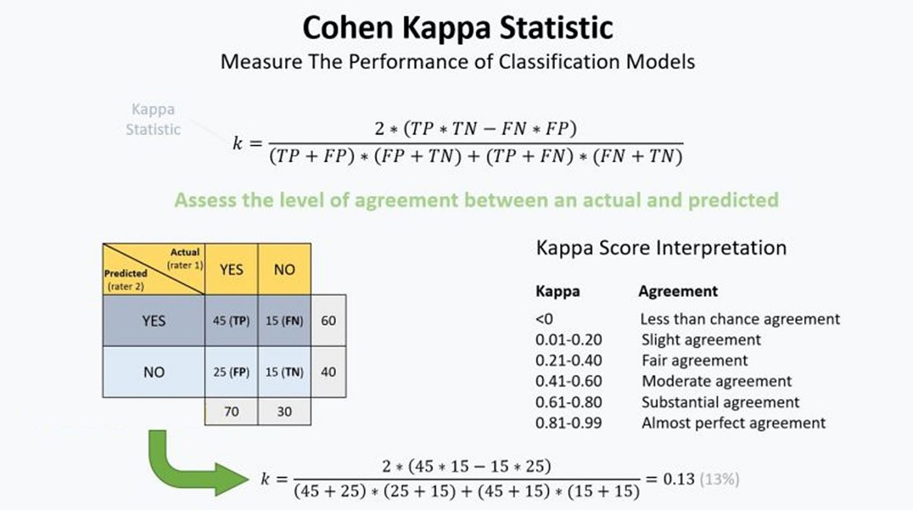

Projects:
Ants vs SomeBees (Python)
I created a tower defense game using object oriented programming paradigms where "Ant" objects used both offensive and defensive class methods to defend from the "Bee" objects with methods to attack and move forward. Inheritance and method lookup were used to create different types of ants to make more interesting strategies.

Scheme Interpreter (Python)
I created an interpreter of the language Scheme in Python by redirecting Scheme expressions and various syntax forms to the appropriate Python function calls.
Build Your Own World (Java)
I created a 2D tile-based engine that randomly generates and graphically renders worlds. Interactivty was implemented with keyboard inputs for starting, saving, and loading worlds in addition to moving an avatar through it.
NGordnet (Java)
I built a browser based tool using the Wordnet dataset in order to chart relative frequency of a given word given a timeframe, and also displays hyponym/hypernym relationships between inputted words. These were created by original implementations of graph traversals that were also mapped to specific years, and their appearances in said year.

MaxQDA Mini (Java)
I am currently creating an interview coding software that allows users to input a codebook and an interview transcript in order to mark interviews sentence by sentence for a given code. Multiple coded interviews can then be compared and the software will compute various statistics regarding intercoder reliability, namely Cohens Kappa. This was inspired by my previous usage of MaxQDA, a similar software, that does not allow myself to code in the way that I would like, or compute statistics in a way that is the most useful to the project at hand.
